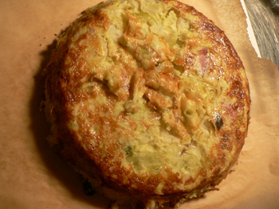
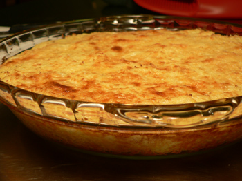

A tale of two loaves
Continuing with my Richard Olney–inspired baked vegetable extravaganza, I present two more efforts from the last few nights: the appealingly named “cabbage loaf” and “cauliflower loaf.” It was the first time I had prepared either vegetable at home in a serious way, and each dish is worth repeating.
The cabbage loaf is not something I would have ever thought to do on my own. The liquid mixture involves such unlikely ingredients as flour and olive oil, and you have to let it rest after whisking it.

Pain au chou
1/2 cup flour
Salt and pepper
3 eggs
2/3 cup milk
1 tablespoon olive oil
1 medium cabbage (about 2.5 pounds), quartered, core and ribs removed
Butter
Boil the cabbage in salted water for thirty minutes. While that’s boiling, combine the flour, seasonings, eggs, milk, and olive oil in a large bowl, and whisk them until smooth. Let the mixture rest while you finish with the cabbage. Run some cold water over it after it’s done boiling, drain it well, and squeeze it dry. Chop it well, and stir it into the egg mixture. Pour it all into a well-buttered baking dish, and bake at 400ºF for 30 to 40 minutes, until the center feels firm. (If you want to unmold it, put a piece of buttered parchment paper down first. Obviously I forgot about this step.)
I added some chopped, sautéed bacon to the mixture, and I served it with a creamy, cheesy mornay sauce. It was very good eating, but not quite as good as the cauliflower loaf, which was salty, sweet, and excellent.

Crème de choufleur au gratin
2 small or 1 large cauliflower, broken into flowerts and parboiled
2 eggs
2/3 cup heavy cream
Salt and pepper
1/2 cup grated parmesan
2 tablespoons butter
Drain the cauliflower well and purée it in a food mill. (I tried and failed to do this in my Foley, and so I used the food processor instead. You could also just chop it finely, or mash it with a fork for that matter.) Whisk the eggs and cream together and add the cauliflower purée. Season it, pour into a buttered dish, and sprinkle the surface evenly and generously with the cheese. Richard Olney’s favorite part is next: “distribute paper-thin shavings of butter.” I forgot to do this and don’t think it matters much. Bake for 20 minutes in a 450ºF oven, or until it’s well browned.
Comments
That Pyrex pie plate has certainly proven to be a good investment! Perhaps a few days of non-cruciferous vegetables are in order before our visit… :)
Seriously, though, all these Olney recipes you’re making look and sound wonderful, and I was just reading an article about a nutritionist who says that Americans are gaining weight, not losing it, with their low-fat diets and insistence on whole grains, so maybe I should go back to cream and butter and just enjoy myself.
I am making the carrot pudding and cauliflower dish this weekend. Both look delicious.
Thanks, mommy! I really like this book. It’s nice to find a cookbook where the style of cooking and the dishes suit me so well. Most of them anyway—I have yet to try any of the offal recipes.
Good luck, jancd! I hope you enjoy them.
As a nutritionist in training, I’m happy to see you’re eating so many veggies! You’re full of vitamins and minerals.
Thanks, Emily! I don’t feel very healthy when I’m eating them, but I’m glad you approve!
All these lovely gratine-y veg things. Yum.
Add a comment